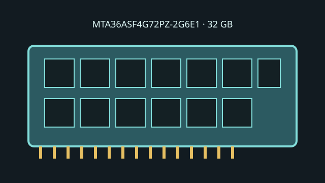

[ MICRON // MODEL RECORD ]
MTA36ASF4G72PZ-2G6E1
A 32 GB DDR4-2666 Micron RDIMM providing a 72-bit ECC interface and registered command/address signaling. Do not confuse the ECC function with the buffering class.

Model specifications
| Capacity / module | 32 GB; 288-pin DDR4 Registered DIMM |
|---|---|
| Rank / chip organization | 2Rx4 dual rank, x4 DRAM organization; x72 module bus (64 data + 8 ECC bits). |
| Speed / JEDEC | DDR4-2666, 2666 MT/s (PC4-21300R); JEDEC CL19 at nominal voltage. |
| Voltage | 1.2 V nominal VDD/VDDQ. |
| ECC / buffering | ECC Registered DIMM (RDIMM); not an unbuffered ECC module. |
| Platform compatibility | Requires a host explicitly qualified for 32 GB 2Rx4 DDR4 RDIMMs. Intel Xeon Scalable 3rd Gen specifies DDR4 up to 3200 MT/s; host memory population, firmware, capacity limits and QVL determine whether this 2666 MT/s DIMM is supported and at what rate. |
Service and compatibility notes
- Check channel population rules and whether the target board supports this module density and rank.
- RDIMM compatibility is not implied by a generic ECC feature; avoid mixing RDIMM with UDIMM/LRDIMM unless the vendor documents it.
- Save the label, SPD contents and any ECC/error-test results with the service record.
Manufacturer & standards sources
- Micron — MTA36ASF4G72PZ-2G6E1 part/SPD recordManufacturer SKU-level reference.
- Micron — RDIMM part catalogManufacturer DDR4 registered-module catalog.
- Intel — Xeon Gold 6338 specificationsCPU DDR4 capability context; not SKU qualification.
- JEDEC — JESD79-4 DDR4 SDRAM standard